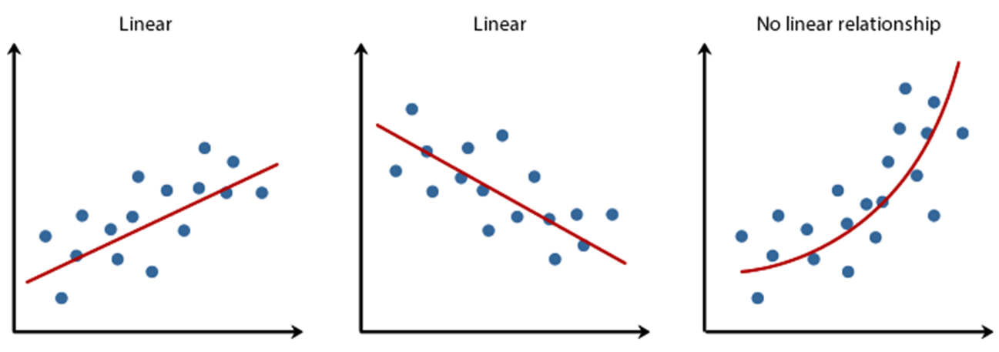
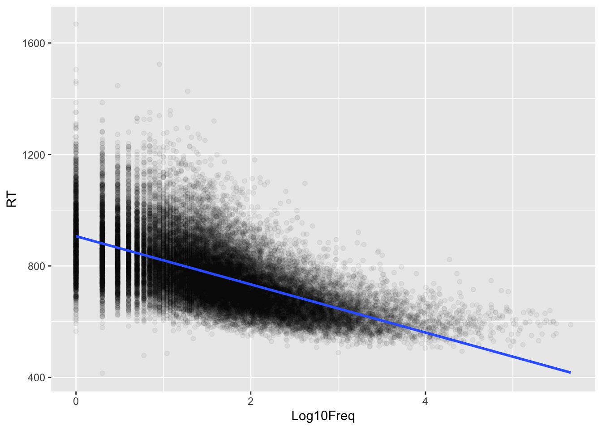
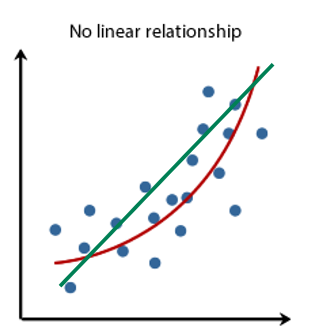
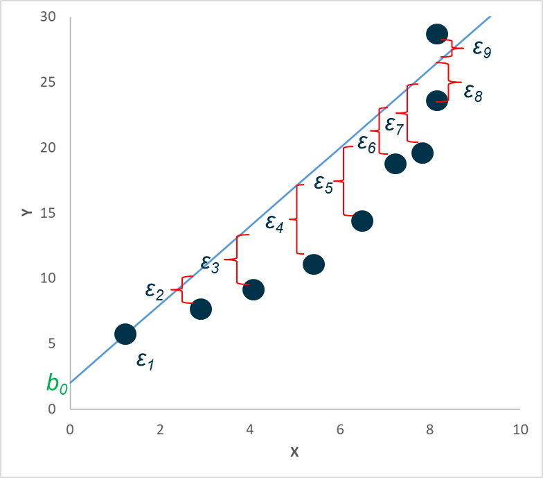
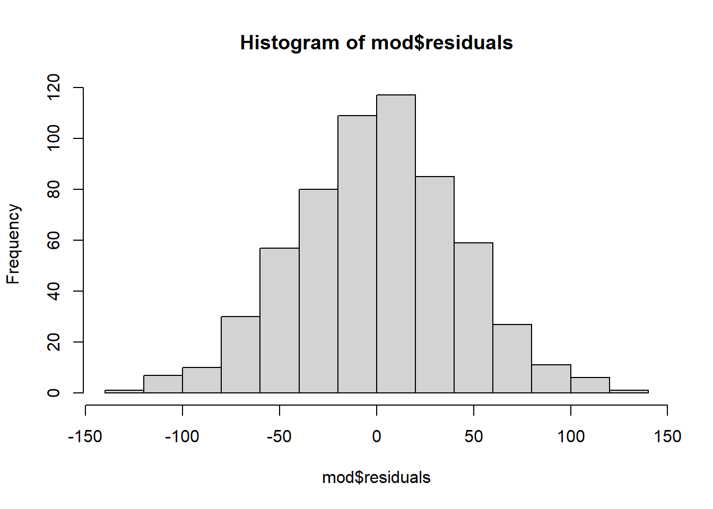
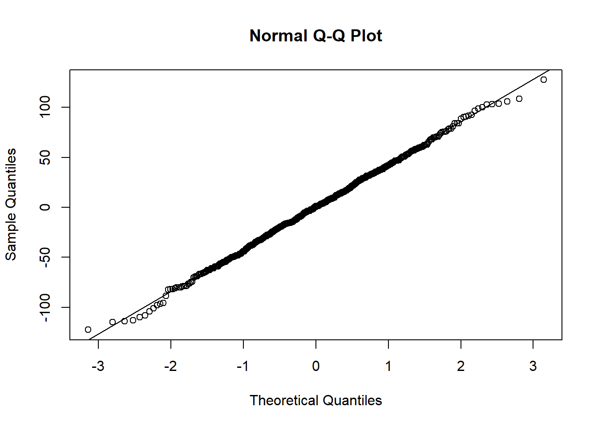
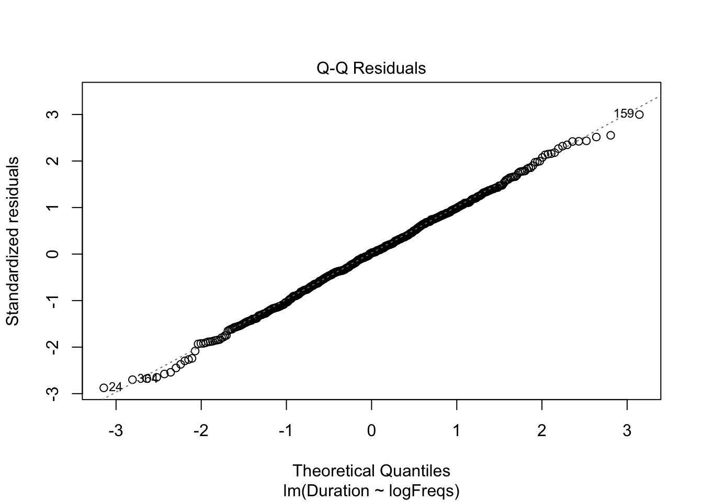
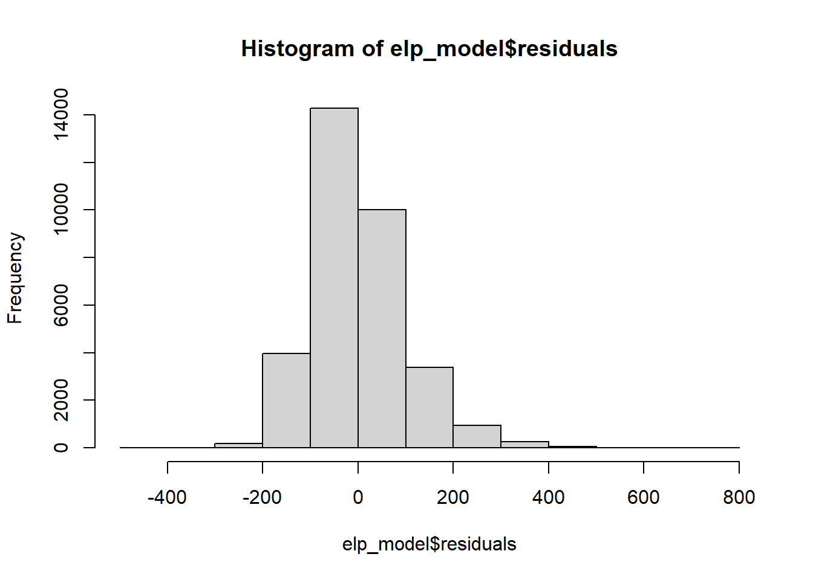
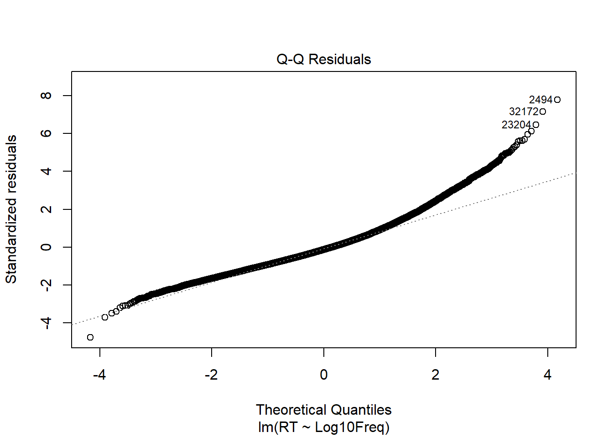

In the last lecture, we discussed that linear regression has three main assumptions:
Linearity: linear relationship between predictor and outcome variables.
Normality of residuals: model residuals normally distributed
Homoscedasticity of residuals or homogeneity of variance of residuals: variance of the residuals assumed to be constant.
Let’s look at how to check each of them.
Linearity
The principle of linear models and correlation as explained in the course is based on the premises that there is a linear relationship between the predictor and outcome variables.

To a large extent this is checked visually. Let’s look at two examples:
On the running example of assignment 3
summary(mod)
Call:
lm(formula = Duration ~ logFreqs, data = dfVowel)
Residuals:
Min 1Q Median 3Q Max
-122.464 -27.642 0.916 29.627 127.628
Coefficients:
Estimate Std. Error t value Pr(>|t|)
(Intercept) 307.5055 2.2525 136.52 <2e-16 ***
logFreqs -5.6397 0.2524 -22.34 <2e-16 ***
---
Signif. codes: 0 '***' 0.001 '**' 0.01 '*' 0.05 '.' 0.1 ' ' 1
Residual standard error: 42.63 on 598 degrees of freedom
Multiple R-squared: 0.455, Adjusted R-squared: 0.4541
F-statistic: 499.3 on 1 and 598 DF, p-value: < 2.2e-16
The relationship appears to a large extent linear between the two variables.
Let’s look in comparison to file “ELP_full_length_frequency.csv” in the /data directory with data from a psycholinguistic study on the reading comprehension of words as a function of frequency part of the English Lexicon Project, described in the the Winter (2019) textbook Chapter 4.1.
elp_data <-read.csv("./data/ELP_full_length_frequency.csv")elp_data %>%ggplot(aes(x = Log10Freq, y = RT)) +geom_point(alpha=1/20) +geom_smooth(method="lm")
`geom_smooth()` using formula = 'y ~ x'

In this dataset, particularly at larger values of Log10Freq the data appears to deviate from the best fit straight line, suggesting a deviation from linearity.
When the data is not linear and fitted with a straight line as the one in green in the figure below, one observation that can be made is that the residuals will not be distributed equally around the fitted values, but in some areas will be larger than in others as in the figure in the right below.
 
We can plot the residuals against the fitted value, and if the resulting plot deviates from points centered around a flat line, the relationship between the variables is not linear.
Let’s see an example based on the last dataset. We fit a model to the data and plot the residuals vs the fitted values. For this, we will use the function plot(). The function plot() when used on a model can generate 6 different diagnostic plots. We can select which one to plot using the which argument. which=1 plots the residuals against the fitted data.
As you can see in the output, the data is curved and deviates from a flat line.
In case of the data not meeting the linearity assumption, data analysis requires the application of a data transformation or the use a general linear model. This is beyond the scope of this introductory course.
Normality of residuals
We already looked at how to check normality of data sets in Workgroup 2. To check a model assumption, we apply the same approach for the model residuals.
We can use histograms, Q-Q plots and the Shapiro-Wilk test. Let’s look at our running example from assignment 3 with the mod model.
summary(mod)
Call:
lm(formula = Duration ~ logFreqs, data = dfVowel)
Residuals:
Min 1Q Median 3Q Max
-122.464 -27.642 0.916 29.627 127.628
Coefficients:
Estimate Std. Error t value Pr(>|t|)
(Intercept) 307.5055 2.2525 136.52 <2e-16 ***
logFreqs -5.6397 0.2524 -22.34 <2e-16 ***
---
Signif. codes: 0 '***' 0.001 '**' 0.01 '*' 0.05 '.' 0.1 ' ' 1
Residual standard error: 42.63 on 598 degrees of freedom
Multiple R-squared: 0.455, Adjusted R-squared: 0.4541
F-statistic: 499.3 on 1 and 598 DF, p-value: < 2.2e-16
First we can plot a histogram of the residuals. I use first here the base R function hist() as ggplot() implementation requires a few tweaks 1 .
hist(mod$residuals)

As can be seen, the residuals are apparently quite normally distributed.
Let’s now use a Q-Q plot:
qqnorm(mod$residuals)qqline(mod$residuals)

The model residuals are largely on the diagonal line indicating high degree of normality.
You can also use the function plot() on a model with the parameter which=2 to generate a QQ-plot. This version includes identification for the data points that are outliers with respect to the line:
plot(mod,which=2)

Finally, we can apply the Shapiro-Wilk test for normality that also confirms the observations.
shapiro.test(mod$residuals)
Shapiro-Wilk normality test
data: mod$residuals
W = 0.9986, p-value = 0.9221
The model normality of residuals assumptions are met in this example data.
In real world data, this is not always the case though. Looking instead to the ELP data, we see a clear deviation from the residuals’ normality assumption.
hist(elp_model$residuals)

plot(elp_model, which =2)

In this case the residuals distribution is skewed and non-normal as clearly shown by the Q-Q plot.
In those cases we will need to apply a data transformation or use a general linear model. This is beyond the scope of this introductory course.
Homogeneity of variance of residuals (Homoscedasticity)
Final assumption to check is that the residuals have a homogeneous variance.
This can be done using the functions ncvTest() function in the car() package.
ncvTest() performs a Non-constant Variance Score Test. A significant test implies that the variance is not constant and the assumption is therefore not met. If we apply to the model for the data in Assignment 3, we see that the test is not significant (p = .42), implying the assumption is met.
library(car)
Loading required package: carData
Attaching package: 'car'
The following object is masked from 'package:dplyr':
recode
The following object is masked from 'package:purrr':
some
ncvTest(mod)
Non-constant Variance Score Test
Variance formula: ~ fitted.values
Chisquare = 0.6488197, Df = 1, p = 0.42053
In comparison, the same test on the ELP data shows that the assumption is not met.
ncvTest(elp_model)
Non-constant Variance Score Test
Variance formula: ~ fitted.values
Chisquare = 2461.434, Df = 1, p = < 2.22e-16
Winter, Bodo. 2019. Statistics for Linguists: An Introduction Using r. Routledge.
ggplot() requires as data input a dataframe or a variable that can be converted to a dataframe. The model generated by lm() is not suitable to directly pass into ggplot. If you want to plot the histogram of residuals with ggplot() you can use the fortify() function that creates a dataframe based on the model. In the created dataframe, the residuals are in a variable called .resid .